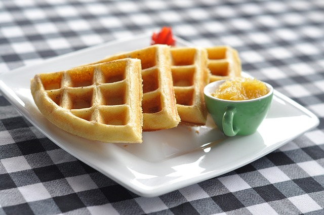

Waffles

Description: this is a recipe for some delicious homemade waffles that you
can make quickly and easily. This recipe will take 10 minutes in prep time
and 15 minutes in cook time, resulting in 6 waffles in total.
Ingredients:
- 2 large eggs
- 2 cups of all-purpose flour
- 1 3/4 cups of milk
- 1/2 cup of vegetable oil
- 1 tablespoon white sugar
- 4 teaspoons baking pow
- 1/4 teaspoon salt
- 1/2 teaspoon vanilla extract
- nonstick cooking spray
Directions
- Preheat a waffle iron according to manufacturer's instructions.
-
Whisk eggs in a large bowl until light and fluffy. Add flour, milk, and
vegetable oil and mix to combine. Whisk in sugar, then mix in baking
powder, salt, and vanilla just until smooth, being careful not to
overmix.
-
Spray the preheated waffle iron with nonstick spray. Pour batter onto
the hot waffle iron and cook until golden brown and the iron stops
steaming, 3 to 5 minutes.